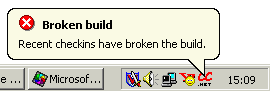
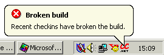
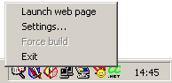
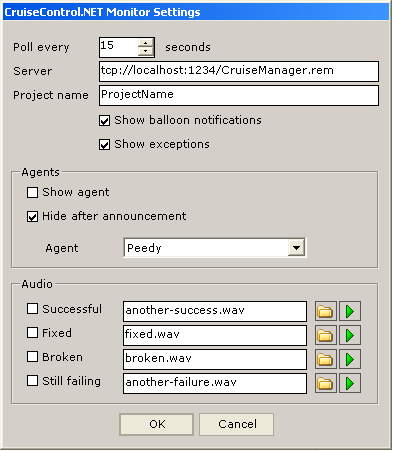

CCTray is an optional utility for use with the CruiseControl.NET Continuous Integration server. It provides feedback upon build progress, and allows control over some of the server's operations.
Main features
- Identify the build status with a glance to the system tray
- Audio/Visual feedback upon completion of builds, indicating success or failure
- Force a build from any PC (when the CruiseControl.NET server is sleeping)
Tray Icons
Once started, CCTray is normally only visible as an icon in the windows system tray.
-
 The most recent build was successful
The most recent build was successful -
 The most recent build failed
The most recent build failed -
 The server is unavailable, or returned an error status
The server is unavailable, or returned an error status -
 The server is currently building the code.
The server is currently building the code.
Balloon notifications
Ballon notifications use the standard Windows tray icon popup balloon whenever a build completes. The text within the balloon is configurable. Balloon notifications may be enabled/disabled.
 

Menu options
Right-clicking the CCTray system tray icon displays a menu with several options:
- Launch web page
- Opens a browser at the CruiseControl.NET build web page for this project. The web page may also be launched by double-clicking the tray icon.
- Settings...
- Displays the settings form, from which you may configure CCTray.
- Force build
- Wakes the CruiseControl.NET server from its sleep and tells it to start building immediately. This menu item will be unavailable if the server is currently building.
- Exit
- Closes the CCTray application.
Configuration
CCTray's configuration settings is stored in the file "cctray-settings.xml" (see a sample), which is located in the same folder as the executable. The file may be hand edited, though it's simpler to use the settings form. To launch the settings form, right-click the tray icon and select 'Settings...'.
Poll every n secondsCCTray detects changes in the CCNet server state by polling at regular intervals. This value sets the period between polls.
Server
A Uri to the remoting interface of the CruiseControl.NET server.
The name of the project to be monitored, as described within the server's configuration file.
Show balloon notifications
Enables or disables notification of completed builds via balloon messages.
Enables or disables notification of completed builds via agents.
Hide after announcement
Turns the agent off after they deliver the completed build message.
The agent to use. This agent must be installed.
Audio
The location of audio files to play upon completed builds. The checkbox enables individual sounds. Use the folder icon to browse for the wav file, and the play icon to preview the sound.
Agents

MS agents may be used to notify you of completed builds. Agents must be installed on your PC before you can use them (they're not part of a default Windows install). The MS Agent homepage is http://www.microsoft.com/msagent, and the download page is here (you can download the software that enables speech here too). An agent WebRing exists here http://www.msagentring.org.
The agent shown above is Peedy. Peedy's installer should give CCTray access to the relevant ACS (Agent Character Script) file. Other agents (such as those used by Microsoft office) must be referenced by absolute paths, and the cctray-settings.xml file must currently be edited by hand. The agents that ship with MS Office 2000 are kept in the folder C:\Program Files\Microsoft Office\Office\.
FAQ
My CCTray icon is constantly greyed out. How can I tell why this is happening?A grey icon indicates some sort of connection or server error. In such cases, the tray icon's tooltip is the exception message. Set your mouse motionless above the CCTray icon for a second to see this message.
"Launch web page" doesn't display the right URL… help!
The URL at which your CruiseControl.NET build results are available is in the server configuration. Ensure that your server's configuration has a fully qualified host name (not just localhost).
This has been observed in cases where an envelope icon appears in the system tray (indicating you've got mail – probably a build report) which nudges the CCTray icon aside, causing the notification balloon to disappear.
I've found a bug. Who can I tell?
Please send help requests to the CCNet user mailing list: ccnet-user@lists.sourceforge.net.
{kind=link}
{kind=link}
{kind=link}
{kind=link}
{kind=link}